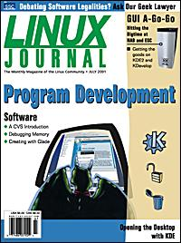

Shutdown Archive web server
Search:
Linux Journal
Issue #87/July 2001

Features
Focus: Program Development
by Don Marti
Debugging Memory on Linux
by Petr Sorfa
Sorfa provides some examples of multiple debugging methods.
CVS: An Introduction
by Ralph Krause
Krause explains the workings and uses of this version control system.
Create User Interfaces with Glade
by Mitch Chapman
Discover the joys of creating GUI apps with Glade and Python—Chapman shows us how.
Indepth
Automating Firewall Log Scanning
by Leo Liberti
Liberti gives some clues for increasing security and saving time by automating log scanning.
Toolbox
At the Forge
Custom JSP Actions
by Reuven M. Lerner
Cooking with Linux
Programming Silence OUT!
by Marcel Gagné
Paranoid Penguin
Intrusion Detection for the Masses
by Mick Bauer
GFX Linux at NAB
by Robin Rowe
Columns
Linux in Education: Integrating a Linux Cluster into a Production High Performance Computing Environment
by Troy Baer
Linux for Suits
Whose Hand Is That in Your Pocket?
by Doc Searls
Focus on Embedded Systems
Linux at the Embedded Systems Conference
by Rick Lehrbaum
Geek Law: Copyright Confusion
by Lawrence Rosen
Reviews
KDevelop 1.4
by Petr Sorfa
Catching up with KDE
by Robert Flemming
Departments
Letters
upFRONT
Best of Technical Support
New Products
Strictly On-Line
Review: Programming KDE: Creating Desktop Applications by Stephanie Black
Archive Index
Shutdown Archive web server
Search:
Copyright © 1994 - 2018
Linux Journal
. All rights reserved.